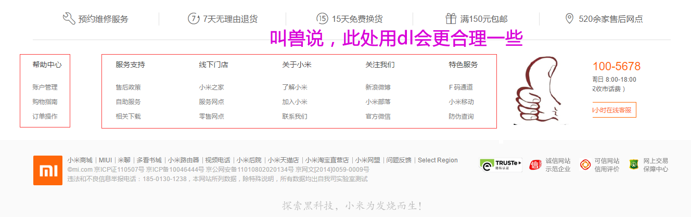

1.列表
什么是列表？

把…制成表,以表显示
容器里面装载着文字或图表的一种形式，叫列表。
列表最大的特点就是 整齐 、整洁、 有序
1.1 有序列表 ol （了解）

有序列表即为有排列顺序的列表，其各个列表项按照一定的顺序排列定义，有序列表的基本语法格式如下：
<ol>
<li>列表项1</li>
<li>列表项2</li>
<li>列表项3</li>
......
</ol>
脚下留心：
1. <ol></ol>中只能嵌套<li></li>，直接在<ol></ol>标签中输入其他标签或者文字的做法是不被允许的。
2. <li>与</li>之间相当于一个容器，可以容纳所有元素。
3. 有序列表会带有自己样式属性，直接忽略。放下那个样式，一会让CSS来！
但是实际工作中， 较少用 ol ，因此我们用一句话来总结下 ol：

1.2 无序列表 ul （重点）
无序列表的各个列表项之间没有顺序级别之分，是并列的。其基本语法格式如下：
<ul>
<li>列表项1</li>
<li>列表项2</li>
<li>列表项3</li>
......
</ul>
比如下面这些，新闻是没有顺序的，不用排队，先到先得，先发布先显示。

所有特性基本与ol 一致。
1.3 自定义列表（理解）
定义列表常用于对术语或名词进行解释和描述，定义列表的列表项前没有任何项目符号。其基本语法如下：
<dl>
<dt>名词1</dt>
<dd>名词1解释1</dd>
<dd>名词1解释2</dd>
...
<dt>名词2</dt>
<dd>名词2解释1</dd>
<dd>名词2解释2</dd>
...
</dl>

用的还可以：

2.表格 table（会使用）
存在即是合理的。 表格的现在还是较为常用的一种标签，但不是用来布局，常见处理表格式数据。

ps: 这些地方用表格，你会觉得生活还是那么美好。。。。忍不住想说 PPAP i hava a pen
2.1 创建表格
在HTML网页中，要想创建表格，就需要使用表格相关的标签。创建表格的基本语法格式如下：
<table>
<tr>
<td>单元格内的文字</td>
...
</tr>
...
</table>
在上面的语法中包含三对HTML标签，分别为 <table></table>、<tr></tr>、<td></td>，他们是创建表格的基本标签，缺一不可，下面对他们进行具体地解释。
- <table>< </table>：用于定义一个表格。
2.<tr>< </tr>：用于定义表格中的一行，必须嵌套在 <table> </table>标签中，在 <table> </table>中包含几对 <tr> </tr>，就有几行表格。
3.<td> </td>：用于定义表格中的单元格，必须嵌套在< <tr> </tr>标签中，一对 <tr> </tr>中包含几对< <td> </td>，就表示该行中有多少列（或多少个单元格）。
注意：
1. <tr></tr>中只能嵌套<td></td>
2. <td></td>标签，他就像一个容器，可以容纳所有的元素
2.2 表格属性

2.3 表头标签
表头一般位于表格的第一行或第一列，其文本加粗居中，如下图所示，即为设置了表头的表格。设置表头非常简单，只需用表头标记<th></th>替代相应的单元格标记<td></td>即可。

2.4 表格结构（了解）
在使用表格进行布局时，可以将表格划分为头部、主体和页脚（页脚因为有兼容性问题，我们不在赘述），具体 如下所示：
<thead></thead>：用于定义表格的头部。
必须位于<table></table> 标签中，一般包含网页的logo和导航等头部信息。
<tbody></tbody>：用于定义表格的主体。
位于<table></table>标签中，一般包含网页中除头部和底部之外的其他内容。

2.5 表格标题
表格的标题： caption
定义和用法
caption 元素定义表格标题。
<table>
<caption>我是表格标题</caption>
</table>
caption 标签必须紧随 table 标签之后。您只能对每个表格定义一个标题。通常这个标题会被居中于表格之上。
2.6 总结表格：
- 表格提供了HTML 中定义表格式数据的方法。
- 表格中由行中的单元格组成。
- 表格中没有列元素，列的个数取决于行的单元格个数。
- 表格不要纠结于外观，那是CSS 的作用。
2.7 合并单元格
跨行合并：rowspan 跨列合并：colspan
3.表单（掌握）
在HTML中，一个完整的表单通常由表单控件（也称为表单元素）、提示信息和表单域3个部分构成。

表单控件： 包含了具体的表单功能项，如单行文本输入框、密码输入框、复选框、提交按钮、重置按钮等。
提示信息：一个表单中通常还需要包含一些说明性的文字，提示用户进行填写和操作。
表单域： 他相当于一个容器，用来容纳所有的表单控件和提示信息，可以通过他定义处理表单数据所用程序的url地址，以及数据提交到服务器的方法。如果不定义表单域，表单中的数据就无法传送到后台服务器。
3.1 input 控件
在上面的语法中，<input />标签为单标签，type属性为其最基本的属性，其取值有多种，用于指定不同的控件类型。除了type属性之外，<input />标签还可以定义很多其他的属性，其常用属性如下表所示。

3.1.1 label标签
label 标签为 input 元素定义标注（标记）。
作用： 用于绑定一个表单元素, 当点击label标签的时候, 被绑定的表单元素就会获得输入焦点
如何绑定元素呢？
for 属性规定 label 与哪个表单元素绑定。
<label for="male">Male</label>
<input type="radio" name="sex" id="male" value="male">
3.2 textarea控件(文本域)
如果需要输入大量的信息，就需要用到<textarea></textarea>标签。通过textarea控件可以轻松地创建多行文本输入框，其基本语法格式如下：
<textarea cols="每行中的字符数" rows="显示的行数">
文本内容
</textarea>

3.3 下拉菜单
使用select控件定义下拉菜单的基本语法格式如下
<select>
<option>选项1</option>
<option>选项2</option>
<option>选项3</option>
...
</select>
注意：
- <select></select>中至少应包含一对<option></option>。
- 在option 中定义selected =" selected "时，当前项即为默认选中项。
3.4 普通按钮button
<button> 按钮 </button> 单独的一个表单控件，就是普通按钮的意思。 只不过它是双标签哦！3.5 表单域
在HTML中，form标签被用于定义表单域，即创建一个表单，以实现用户信息的收集和传递，form中的所有内容都会被提交给服务器。创建表单的基本语法格式如下：
<form action="url地址" method="提交方式" name="表单名称">
各种表单控件
</form>
常用属性：
Action 在表单收集到信息后，需要将信息传递给服务器进行处理，action属性用于指定接收并处理表单数据的服务器程序的url地址。
method 用于设置表单数据的提交方式，其取值为get或post。
name 用于指定表单的名称，以区分同一个页面中的多个表单。
注意： 每个表单都应该有自己表单域。
4.多媒体 embed（会使用）
embed可以用来插入各种多媒体，格式可以是 Midi、Wav、AIFF、AU、MP3等等。url为音频或视频文件及其路径，可以是相对路径或绝对路径。
因为兼容性问题，我们这里只讲解 插入网络视频， 后面H5会讲解 audio 和video 视频多媒体。
<embed src="http://player.youku.com/player.php/sid/XMTI4MzM2MDIwOA==/v.swf" allowFullScreen="true" quality="high" width="480" height="400" align="middle" allowScriptAccess="always" type="application/x-shockwave-flash"></embed>

优酷，土豆，爱奇艺，腾讯、乐视等等
- 先上传
- 在分享